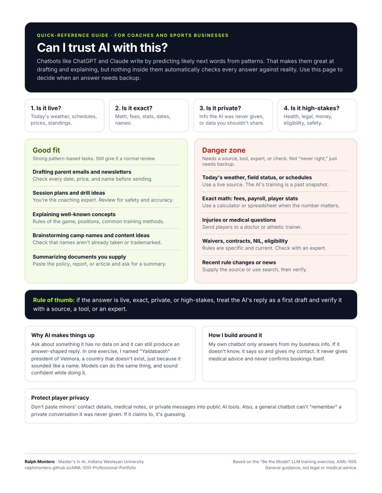

I named the president of a country that doesn't exist.
Before this exercise, I assumed a chatbot looked things up before it answered. Then an AI tutor asked me to finish the sentence "The current president of the small island nation of Velmora is ___." I answered "Yaldabaoth," only because it sounded like a name. Velmora is made up.
That's a hallucination, and language models make them for the same reason I did: they produce the answer that sounds right. For coaches and small sports businesses starting to lean on AI, knowing when to trust it is now a basic skill.
An interactive lesson, turned into a guide coaches can use.
- The exercise. A five-stage interactive session with an AI tutor ("Professor Predict") on how large language models are trained and where they fail. Instead of reading about it, I played the role of the model.
- The portfolio version. I turned what I learned into a one-page "Can I trust AI with this?" guide that sorts common coaching and business tasks into Good Fit and Danger Zone, with a four-question check before trusting any answer.
Understand how AI is trained, so I know where it breaks.
My objective was to connect how language models are trained to what they can and can't do reliably, then give my audience a simple way to decide when an AI answer needs a source, a tool, or an expert before they act on it.
Five stages, one AI tutor.
-
Be the model
I completed sentences with whatever felt most likely, with no searching allowed. "Paris" and "time" were easy. Then came the Velmora trap, and I made up a president.
-
Reveal the mechanism
The tutor explained that pretraining teaches a model to predict the next word, and post-training teaches it to follow instructions. Neither one adds a built-in fact-checker.
-
Guess the training mix
I sorted 11 kinds of text, from Wikipedia to private texts to today's weather, by how likely they are to show up in training data.
-
Good Fit or Danger Zone
I judged 10 tasks, like drafting a cover letter, giving a live stock price, and personalized legal advice, and explained my reasoning for each batch.
-
Translate for my audience
For the portfolio, I rebuilt the Good Fit / Danger Zone idea around real coaching tasks and designed a printable one-page guide.
What I learned, including what I got wrong.
- Fluent isn't the same as true. Models produce likely continuations from patterns. Common, well-documented facts usually come out right, but a plausible answer can still be false.
- Training is a snapshot. What surprised me most: a model can hold obscure old texts but can't know today's weather or a live stock price on its own. That takes an outside tool like web search.
- Private means absent. A general model doesn't have your private messages or company files, so it can't reliably "recall" them.
- Two misjudgments taught me the most. I called exact multi-digit multiplication a Good Fit, and I guessed a company's confidential memo would show up "a lot" in training data. Both times I was overestimating what the model actually has and can do. Exact math belongs in a calculator, and confidential files aren't in a general model's training.
Exercise completion summary.
Generated by the AI tutor at the end of the session, based on my actual answers.
Ralph completed "Be the Model," an interactive exercise on how LLMs are trained and where they falter. He generated "Yaldabaoth" as president of the fictional nation of Velmora — then immediately identified it as "just generated," an answer-shaped continuation with no grounding behind it. He correctly flagged private texts as basically absent from training data, and his sharpest insight came in the training-mix round: he was surprised that a live stock price or today's weather — "something as simple as that" — is beyond a model's static snapshot, while obscure old texts sit comfortably in it. In the Good Fit / Danger Zone round, he rightly marked live stock prices as danger zone, citing "live values," and identified personalized legal advice as high-risk.
Takeaways: LLMs produce plausible continuations from learned patterns rather than automatically verified truth, and their training material, post-training, supplied context, and tools strongly shape what they do well or poorly.
The SchoolAI link may require a SchoolAI login. The completion summary above is copied from the session.
Four questions before you trust an answer.
Good fit
Strong pattern-based tasks. Still give it a normal review.
- Drafting parent emails and newsletters. Check every date, price, and name.
- Session plans and drill ideas. You're the expert. Review for safety.
- Explaining well-known concepts. Rules, positions, common training methods.
- Brainstorming camp names and content. Check names aren't already taken.
- Summarizing documents you supply. Paste the policy or report first.
Danger zone
Needs a source, tool, expert, or check. Not "never right," just needs backup.
- Today's weather, field status, schedules. Use a live source.
- Exact math: fees, payroll, stats. Use a calculator or spreadsheet.
- Injuries or medical questions. Doctor or athletic trainer.
- Waivers, contracts, NIL, eligibility. Check with an expert.
- Recent rule changes or news. Supply the source or use search.
Rule of thumb: if the answer is live, exact, private, or high-stakes, treat the AI's reply as a first draft and verify it with a source, a tool, or an expert.

Can I trust AI with this? One-page guide
The four-question check, ten coaching tasks sorted into Good Fit and Danger Zone, and a player-privacy reminder on one printable page.
I'd already built around this problem.
This exercise explained why the rules in my GK Coach Assistant mattered. Each rule covers a Danger Zone:
| Danger zone | Rule in my chatbot |
|---|---|
| Making things up | Answer only from my knowledge base. If it isn't there, say "I don't have that info" and give my contact. |
| Live information | Never confirm availability or bookings. I confirm within 24 hours. |
| Medical questions | Never give injury advice. Refer to a doctor or athletic trainer. |
| Private data | Collect a parent's contact for players under 18, and nothing beyond what booking needs. |
What I used, and why.
- SchoolAIRan the "Professor Predict" tutor from a structured course prompt.
- IBM beginner's guideBackground reading on AI and machine learning.
- LLM conceptsPretraining, next-token prediction, post-training, hallucination, and tool use.
- Claude (Anthropic)Help designing the guide and this page. The exercise answers are my own.
Why this matters.
This artifact shows I understand why AI fails, not just how to use it, and it gives coaches a one-page check for when an AI answer is safe to act on.
Unique value
I learned this by playing the model and getting things wrong, then rebuilt the lesson around the tasks coaches actually do. I've already applied it: my own chatbot's rules are designed around these exact Danger Zones. It shows four skills: AI literacy, critical evaluation of AI output, responsible AI use, and translating technical ideas for non-technical people.
Relevance
Coaches and small businesses are already using ChatGPT for emails, plans, and posts. The risk isn't using AI, it's trusting it on the wrong task: a wrong fee, a made-up rule, or injury advice. For employers, it shows I know where AI needs human review and outside tools.
How it connects to my value proposition: "Responsible" is a core part of my promise. Artifact 01 built safety rules into a tool, Artifact 02 showed how to choose the right model, and this one explains when any AI answer needs a human check.
Sources.
- IBM Developer. (n.d.). A beginner's guide to artificial intelligence and machine learning. https://developer.ibm.com/articles/cc-beginner-guide-machine-learning-ai-cognitive/
- Indiana Wesleyan University. (2026). Professor Predict: "Be the Model" interactive exercise [AI tutor prompt]. AIML-500 Machine Learning Fundamentals.
- SchoolAI. (n.d.). SchoolAI [AI learning platform]. https://schoolai.com